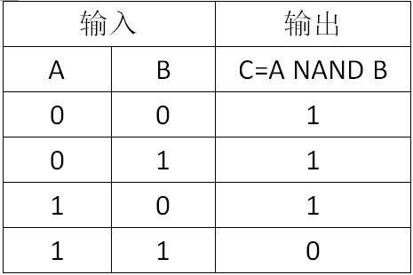
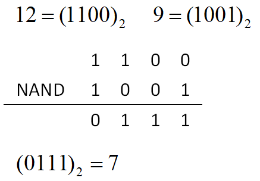

NAND（与非）是一种二元逻辑运算，其运算结果为真当且仅当两个输入的布尔值不全为真。NAND运算的真值表如下（$1$ 表示真，$0$ 表示假）:

两个非负整数的 NAND 是指将它们表示成二进制数，再在对应的二进制位进行 NAND 运算。由于两个二进制数的长度可能不等，因此一般约定一个最高位 $K$，使得两个数的二进制表示都不超过 $K$ 位，不足 $K$ 位的在高位补零。
譬如 12 NAND 9（K=4）的计算过程如下：

故 12 NAND 9（K=4）=7。
容易验证，NAND 运算满足交换律但不满足结合律，故计算若干个数的 NAND 时，应先计算括号内的，无括号时从左往右计算。
给定 $N$ 个非负整数 $A_1,A_2 \cdots A_N$ 和约定位数 $K$，利用 NAND 运算与括号，每个数可以使用任意次，请你求出范围 $[L,R]$ 内可以被计算出的数有多少个。
第一行是用空格隔开的四个正整数 $N$，$K$，$L$ 和 $R$，接下来的一行是 $N$个非负整数 $A_1,A_2……A_N$，其含义如上所述。
$100\%$ 的数据满足 $K≤60$ 且 $N \le 1000, 0 \le A_i \le 2^{k-1}, 0 \le L \le R \le 10^{18}$。
仅包含一个整数，表示 $[L,R]$ 内可以被计算出的数的个数。
3 3 1 4 3 4 5
4
【样例说明】
(3 NAND 4) NAND (3 NAND 5) = 1，5 NAND 5 = 2，3和4直接可得。
 Comet OJ
Comet OJ